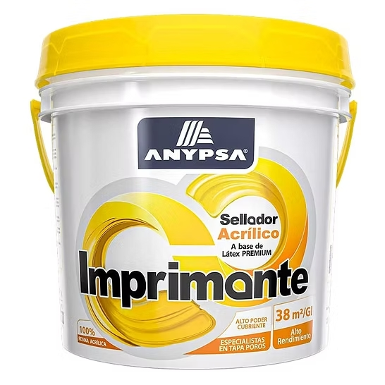

Imprimante para paredes

Recubrimiento previo que ayuda a sellar superficies porosas y favorece la adherencia de la pintura posterior. Su elección depende del tipo de pared y del acabado que se desea obtener.